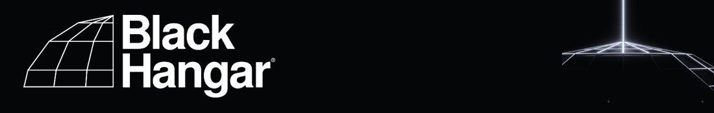

Elige tu nombre y verás tus tareas. Se puede cambiar en Ajustes.
Toca la ☆ de un artista para marcarlo: lo verás destacado y te avisaremos antes de que empiece.
Con la app abierta y la pantalla encendida, te avisamos de tus artistas antes de que empiecen y cuando empiezan. Cuánto antes, y si quieres notificaciones, lo eliges en Ajustes. Con el móvil bloqueado no llegan.
Línea roja = ahora. Las 2:00 salen dos veces por el cambio de hora (1ª y 2ª).
Cambio = cambiado por la organización (borde lila en el horario).
Dónde está, cuánta luz queda y cuándo llega la hora dorada.
Brújula aproximada (±5–15°). Aléjate de metal, estructuras, escenarios e imanes (fundas con imán también). Para calibrarla, mueve el móvil en forma de 8.
Hora dorada: el sol entre −4° y 6°. Hora azul: entre −6° y −4°. Calculado en el móvil, sin conexión. Tu ubicación solo se usa en este móvil: no se envía a ningún sitio.
Brújula aproximada (±5–15°), lejos de metal. Mueve el móvil en forma de 8 para calibrar. Si el dibujo no coincide con el sol, ajusta el campo de visión.
Cargando la previsión…
Previsión: Open-Meteo: lluvia del modelo más fino que cubre el lugar (AROME 1,3 km de Météo-France, HARMONIE, ICON, ECMWF…) · Radar: RainViewer · Capa Windy: Windy.com · Mapa: © OpenStreetMap (carreteras) y Natural Earth (sin conexión). La ubicación es la misma que la de la pestaña Sol.
Toca una cámara para marcar si está montada o grabando y qué SSD lleva. Lo ve todo el equipo.
Quién ha cambiado qué (estado y SSD), lo último arriba.
Toca un mapa para ampliarlo y muévelo con el dedo. Vuelve a tocar para verlo entero.
Para dejarla en un monitor o una tele: la hora en grande, qué suena en cada escenario y lo que viene. Sin favoritos.
Un solo escenario (backstage): qué suena, cuánto queda, el cambio y el próximo efecto en grande.
Línea roja = ahora. Toca una tarea tuya para marcarla como hecha. «Equipo» = una columna por persona. Pellizca con dos dedos para separar o juntar las horas.
Solo funciona con conexión, en la app publicada.
Toca una actuación para cambiarla. Nadie ve nada hasta que pulsas «Guardar y publicar».
Nadie ve los cambios mientras editas. Cuando tocas «Guardar y publicar», los verán todos los móviles en 1 o 2 minutos.
Para quitar el aviso, borra el texto y publica. Lo verán todos en 1 o 2 minutos.
Las personas que pueden elegir su nombre en «Tareas». El equipo decide qué ven. Cambiar un nombre es como crear una persona nueva (pierde sus ✓).
Para cambiar muchas: «Descargar Excel», edítalo (Excel, Numbers o Google Sheets) y vuelve a «Subir Excel». También vale el Excel por pestañas, una por persona («LAIA», «MARTÍ / CALVINS»).
Más fácil desde Organización → Equipo. Aquí: «Laia: marketing, story» (equipo: producción, marketing, vídeo o foto).
«- tarea» (con guion delante) = sin hora, para hacer durante el día. @nombre = una persona · @grupo = todos los de ese grupo · @todos = todo el equipo. Una línea con solo «@Marc» vale para las tareas de debajo que no digan quién. De 6:00 a 12:00 es el montaje (antes de abrir). También puedes pegar de un Excel: hora, tarea, quién. Con varios días, escribe «# Domingo» (o el día que sea) encima de las tareas de ese día, o «2/10:30» delante de la hora.
Cada uno elige su nombre en «Tareas» y solo ve las suyas.
Quién tiene qué a cada hora. Con ✓, lo hecho; en rojo, lo que va tarde. Toca una persona para ver solo lo suyo.
Solo en este móvil.
Con perfil ves también tus tareas, las prioridades y los efectos. Se elige en un solo sitio: aquí o tocando tu nombre arriba.
«Sistema» sigue el modo claro u oscuro del móvil.
Con el móvil bloqueado no llegan: solo con la app abierta en pantalla (para eso, «Mantener la pantalla encendida»). En iPhone, las notificaciones necesitan la app añadida a la pantalla de inicio (iOS 16.4 o más nuevo).
Así se abre a pantalla completa, como una app, y en iPhone es la única forma de recibir notificaciones.
Marca los artistas que cubres: los verás destacados y te avisaremos antes de que empiecen.
Llega a todo el equipo en la pestaña Tareas y, con notificación, a quien tenga «Avisarme de incidencias».
Las marcas van a la hora real (timecode de hora del día). Solo encajan si las cámaras graban con el timecode en hora del día y bien sincronizado. «Ajuste» corrige un reloj adelantado o retrasado (o el tiempo que tardas en tocar: −5 s pone la marca 5 s antes).
DaVinci: en la línea de tiempo, clic derecho › Timelines › Import › Timeline Markers from EDL. La línea de tiempo debe empezar en la hora real de los clips.
Final Cut: Archivo › Importar › XML. Crea un proyecto «Momentos» con las marcas en su hora: pon encima el multicam o los clips sincronizados.
Graba 3–4 s de esta pantalla al empezar cada tarjeta. En la edición, compara el número del clip con su timecode: la diferencia es el desfase de esa cámara (ponlo en «Ajuste» de Momentos). El destello y el pitido caen justo en el segundo exacto, para sincronizar imagen y sonido.